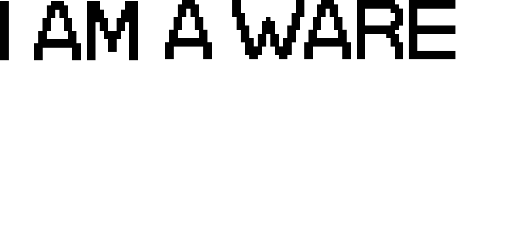
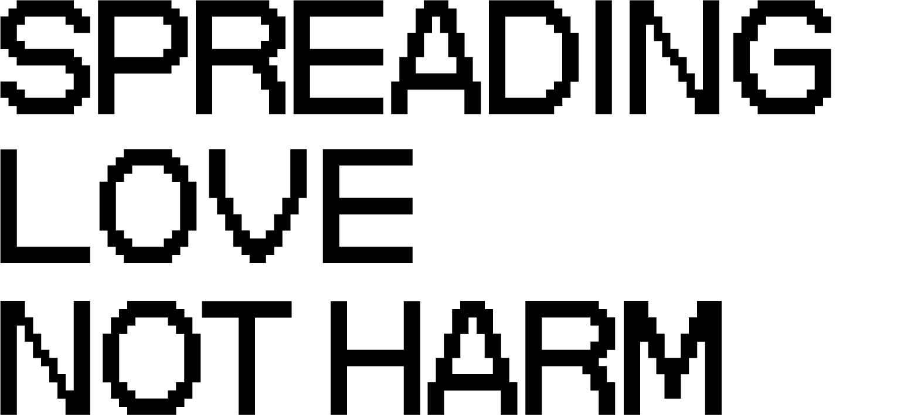

 
Did you know that Malware was not "Mal" When it was first created?
It was more of a
creative experiment, a play, exploration of technology.
Let's make more wares without mals. Let's spread creativity and love instead of harm.